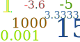
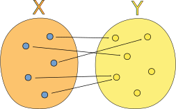
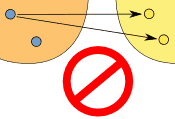
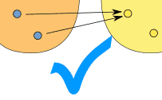
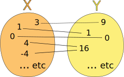
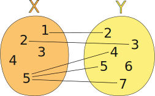
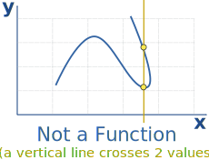
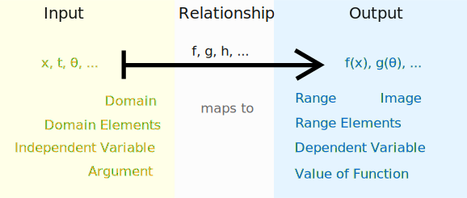
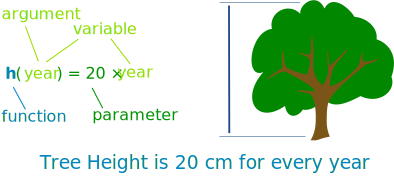
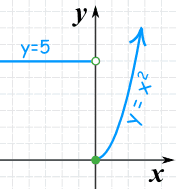

What is a Function?
A function relates an input to an output.
It is like a machine that has an input and an output.
And the output is related somehow to the input.
| f(x) |
"f(x) = ... " is the classic way of writing a function. |
Input, Relationship, Output
We will see many ways to think about functions, but there are always three main parts:
- The input
- The relationship
- The output
Example: "Multiply by 2" is a very simple function.
Here are the three parts:
| Input | Relationship | Output |
|---|---|---|
| 0 | × 2 | 0 |
| 1 | × 2 | 2 |
| 7 | × 2 | 14 |
| 10 | × 2 | 20 |
| ... | ... | ... |
For an input of 50, what is the output?
Some Examples of Functions
- x2 (squaring) is a function
- x3+1 is also a function
- Sine, Cosine and Tangent are functions used in trigonometry
- and there are lots more!
But we are not going to look at specific functions ...
... instead we will look at the general idea of a function.
Names
First, it is useful to give a function a name.
The most common name is "f", but we can have other names like "g" ... or even "marmalade" if we want.
But let's use "f":

We say "f of x equals x squared"
what goes into the function is put inside parentheses () after the name of the function:
So f(x) shows us the function is called "f", and "x" goes in
And we usually see what a function does with the input:
f(x) = x2 shows us that function "f" takes "x" and squares it.
Example: with f(x) = x2:
- an input of 4
- becomes an output of 16.
In fact we can write f(4) = 16.
The "x" is Just a Place-Holder!
Don't get too concerned about "x", it is just there to show us where the input goes and what happens to it.
It could be anything!
So this function:
f(x) = 1 - x + x2
Is the same function as:
- f(q) = 1 - q + q2
- h(A) = 1 - A + A2
- w(θ) = 1 - θ + θ2
The variable (x, q, A, etc) is just there so we know where to put the values:
f(2) = 1 - 2 + 22 = 3
Sometimes There is No Function Name
Sometimes a function has no name, and we see something like:
y = x2
But there is still:
- an input (x)
- a relationship (squaring)
- and an output (y)
Relating
At the top we said that a function was like a machine. But a function doesn't really have belts or cogs or any moving parts - and it doesn't actually destroy what we put into it!
A function relates an input to an output.
Saying "f(4) = 16" is like saying 4 is somehow related to 16. Or 4 → 16
Example: this tree grows 20 cm every year, so the height of the tree is related to its age using the function h:
h(age) = age × 20
So, if the age is 10 years, the height is:
h(10) = 10 × 20 = 200 cm
Here are some example values:
| age | h(age) = age × 20 |
|---|---|
| 0 | 0 |
| 1 | 20 |
| 3.2 | 64 |
| 15 | 300 |
| ... | ... |
What Types of Things Do Functions Process?
"Numbers" seems an obvious answer, but ...
|
... which numbers? For example, the tree-height function h(age) = age×20 makes no sense for an age less than zero. |
|
| ... it could also be letters ("A"→"B"), or ID codes ("A6309"→"Pass") or stranger things. |
So we need something more powerful, and that is where sets come in:
|  |
A set is a collection of things.Here are some examples:
|
Each individual thing in the set (such as "4" or "hat") is called a member, or element.
So, a function takes elements of a set, and gives back elements of a set.
A Function is Special
But a function has special rules:
- It must work for every possible input value
- And it has only one relationship for each input value
This can be said in one definition:

Formal Definition of a Function
A function relates each element of a set
with exactly one element of another
set
(possibly the same set).
The Two Important Things!
|
1. |
"...each element..." means that every element in X is related to some element in Y. We say that the function covers X (relates every element of it). (But some elements of Y might not be related to at all, which is fine.) |
|
2. |
"...exactly one..." means that a function is single valued. It will not give back 2 or more results for the same input. So "f(2) = 7 or 9" is not right! |
|
"One-to-many" is not allowed, but "many-to-one" is allowed: |
||
|  |  | |
| (one-to-many) | (many-to-one) | |
| This is NOT OK in a function | But this is OK in a function | |
When a relationship does not follow those two rules then it is not a function ... it is still a relationship, just not a function.
Example: The relationship x → x2

Could also be written as a table:
| X: x | Y: x2 |
|---|---|
| 3 | 9 |
| 1 | 1 |
| 0 | 0 |
| 4 | 16 |
| -4 | 16 |
| ... | ... |
It is a function, because:
- Every element in X is related to Y
- No element in X has two or more relationships
So it follows the rules.
(Notice how both 4 and -4 relate to 16, which is allowed.)
Example: This relationship is not a function:

It is a relationship, but it is not a function, for these reasons:
- Value "3" in X has no relation in Y
- Value "4" in X has no relation in Y
- Value "5" is related to more than one value in Y
(But the fact that "6" in Y has no relationship does not matter)

Vertical Line Test
On a graph, the idea of single valued means that no vertical line ever crosses more than one value.
If it crosses more than once it is still a valid curve, but is not a function.
Some types of functions have stricter rules, to find out more you can read Injective, Surjective and Bijective
Infinitely Many
My examples have just a few values, but functions usually work on sets with infinitely many elements.
Example: y = x3
- The input set "X" is all Real Numbers
- The output set "Y" is also all the Real Numbers
We can't show ALL the values, so here are just a few examples:
| X: x | Y: x3 |
|---|---|
| -2 | -8 |
| -0.1 | -0.001 |
| 0 | 0 |
| 1.1 | 1.331 |
| 3 | 27 |
| and so on... | and so on... |
Domain, Codomain and Range
In our examples above
- the set "X" is called the Domain,
- the set "Y" is called the Codomain, and
- the set of elements that get pointed to in Y (the actual values produced by the function) is called the Range.
We have a special page on Domain, Range and Codomain if you want to know more.
So Many Names!
Functions have been used in mathematics for a very long time, and lots of different names and ways of writing functions have come about.
Here are some common terms you should get familiar with:

Example: z = 2u3:
- "u" could be called the "independent variable"
- "z" could be called the "dependent variable" (it depends on the value of u)
Example: f(4) = 16:
- "4" could be called the "argument"
- "16" could be called the "value of the function"
Example: h(year) = 20 × year:

- h() is the function
- "year" could be called the "argument", or the "variable"
For software "year" is called the parameter, and the value given to the parameter is called the variable!
We often call a function "f(x)" when in fact the function is really "f"
Ordered Pairs
And here is another way to think about functions:
Write the input and output of a function as an "ordered pair", such as (4,16).
They are called ordered pairs because the input always comes first, and the output second:
(input, output)
So it looks like this:
( x, f(x) )
Example:
(4,16) means that the function takes in "4" and gives out "16"
Set of Ordered Pairs
A function can then be defined as a set of ordered pairs:
Example: {(2,4), (3,5), (7,3)} is a function that says
"2 is related to 4", "3 is related to 5" and "7 is related 3".
Also, notice that:
- the domain is {2,3,7} (the input values)
- and the range is {4,5,3} (the output values)
But the function has to be single valued, so we also say
"if it contains (a, b) and (a, c), then b must equal c"
Which is just a way of saying that an input of "a" cannot produce two different results.
Example: {(2,4), (2,5), (7,3)} is not a function because {2,4} and {2,5} means that 2 could be related to 4 or 5.
In other words it is not a function because it is not single valued
A Benefit of Ordered Pairs
We can graph them...
... because they are also coordinates!
So a set of coordinates is also a function (if they follow the rules above, that is)
A Function Can be in Pieces
We can create functions that behave differently depending on the input value
Example: A function with two pieces:
- when x is less than 0, it gives 5,
- when x is 0 or more it gives x2
|  | Here are some example values:
|
Read more at Piecewise Functions.
Explicit vs Implicit
One last topic: the terms "explicit" and "implicit".
Explicit is when the function shows us how to go directly from x to y, such as:
y = x3 − 3
When we know x, we can find y
That is the classic y = f(x) style that we often work with.
Implicit is when it is not given directly such as:
x2 − 3xy + y3 = 0
When we know x, how do we find y?
It may be hard (or impossible!) to go directly from x to y.
"Implicit" comes from "implied", in other words shown indirectly.
Graphing
- The Function Grapher can only handle explicit functions,
- The Equation Grapher can handle both types (but takes a little longer, and sometimes gets it wrong).
Conclusion
- a function relates inputs to outputs
- a function takes elements from a set (the domain) and relates them to elements in a set (the codomain).
- all the outputs (the actual values related to) are together called the range
- a function is a special type of relation where:
- every element in the domain is included, and
- any input produces only one output (not this or that)
- an input and its matching output are together called an ordered pair
- so a function can also be seen as a set of ordered pairs